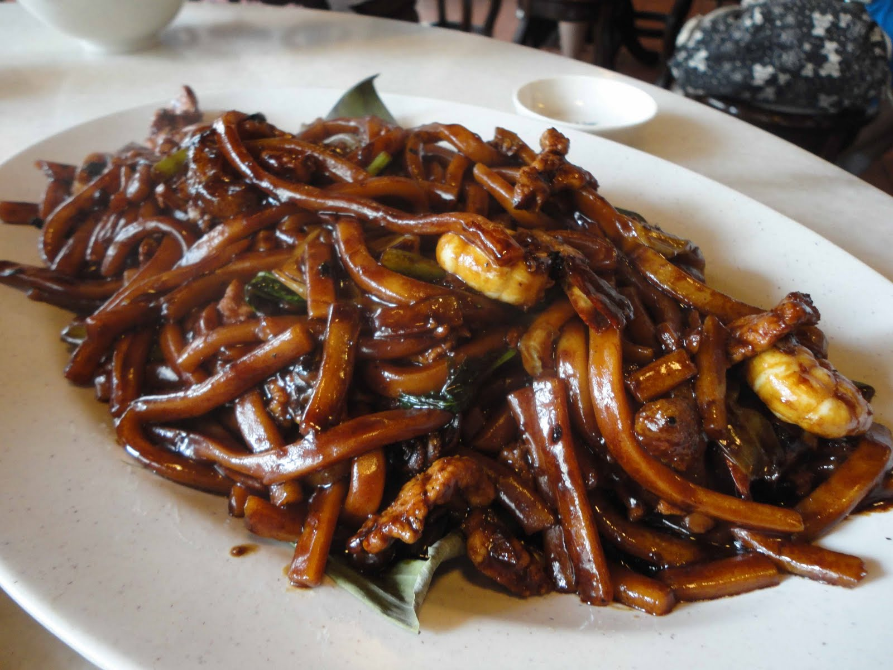

Hokkien Mee
Recipe Source

"KL Hokkien Mee"
by
brown_color
is licensed under
CC BY 2.0
Description
Dark, rich, and glossy - this Malaysian Hokkien Mee is the noodle dish of your dreams! Malaysian Hokkien Mee is a flavorful noodle dish that is rich, savoury, and incredibly satisfying… my rendition is quick and easy and is bound to be a new weekday rotation in your home.
In this version, I've swapped out the traditional pork belly for succulent chicken thighs, making it a versatile and delightful option for everyone.
Ingredients
- 2 servings or about 200g fresh yellow egg noodles
- 2 tbsp vegetable oil
- 100g (3.5oz) boneless chicken thighs, preferably with skin on, sliced into bite-sized pieces
- 100g (3.5oz) prawns (shrimp), peeled and deveined
- 1 medium onion, thinly sliced
- 3 medium cloves garlic, minced
- 1 cup bok choy, chopped
- 1 cup bean sprouts
Hokkien Mee Sauce
- 1 tbsp dark soy sauce
- 1 tsp kecap manis (sweet soy sauce)
- 1 tsp light soy sauce
- 1 tsp oyster sauce
- 1 tsp cornstarch
- 1/4 cup (60ml) water
Directions
-
Prep Your Ingredients: Have all of your stir fry ingredients ready. Mince the garlic, slice the onion and chicken thighs, peel and devein the prawns. Have your noodles and vegetables ready. Mix the sauce ingredients and set aside.
-
Stir-Fry Proteins: Heat oil in a wok, and cook the chicken thighs until done. Add prawns and cook just until the surface is orange.
-
Stir Fry Aromatics: Stir-fry the onions and garlic until fragrant.
-
Combine Noodles and Sauce: Add the noodles and prepared sauce to the wok, and stir-fry until coated.
-
Incorporate Vegetables: Add the chopped bok choy and bean sprouts, and stir-fry until the vegetables are tender but still crisp. The ingredients should be well-coated and the sauce should have thickened by now.
-
Serve: Plate the Malaysian Hokkien Mee, garnish with spring onions, lime, and sambal, and serve hot.
Home